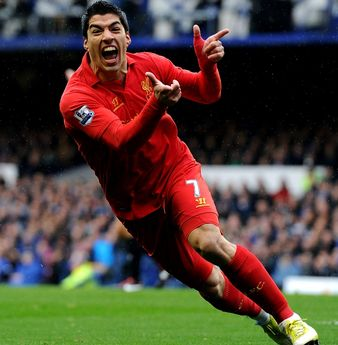
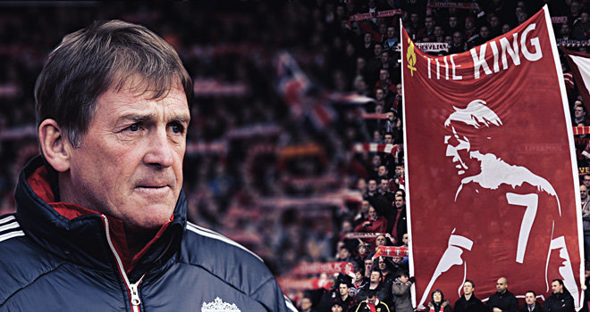
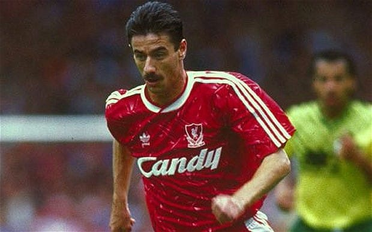

Steven Gerrard recently retired from all play in 2016. He played 16 full seasons with Liverpool, and won the hearts of all the supporters. He was known for pulling Liverpool out of bad situations single handedly, often times popping up to score important goals for the team. Although he doesn't play professionally anymore, he recently joined the Liverpool Academy coaching team, helping train the next generation of youngsters.
Player Name
Appearances for Liverpool
Goals Scored
Steven Gerrard
504
120
Luis Suarez

Luis Suarez playing for Liverpool
Luis Suarez transferred to Liverpool from Ajax in 2011, and set the pace for his time at LFC with a goal in his first game. He was known for scoring impossible goals, and quickly became one of the best players in the premier league. It's difficult to talk about his time with Liverpool without mentioning the controversies. Many people who don't even follow soccer know about the time he bit an opposing player. None of the controversy can take away from the talent and game changing ability he possessed. Following the 2014 season, Suarez transferred to Spanish club Barcelona, and has continued scoring important goals in the Spanish league.
Player Name
Appearances for Liverpool
Goals Scored
Luis Suarez
110
69
Kenny Dalglish

King Kenny
Kenny Dalglish, often referred to as "King Kenny", played 13 full seasons for Liverpool, from 1977-1990. He is known for his connection with the fans, and for being a pure goal scoring striker. Following his retirement, he managed Liverpool for 6 seasons, winning the league title 3 times. Dalglish went on to manage Blackburn Rovers and also led them to the league title in the 1994-1995 season. He is still affiliated with LFC in a director role.
Player Name
Appearances for Liverpool
Goals Scored
Kenny Dalglish
355
118
Ian Rush

Ian Rush
Ian Rush is Liverpool's all time leading goal scorer. He played for the club in two separate stints, from 1980-1986, and 1988-1996. His trophy cabinet consists of 5 league titles, 3 FA cups, 5 league cups, and 2 European cups. His last appearance for Liverpool was in the 1996 FA cup final, and he retired from professional play in 2000.